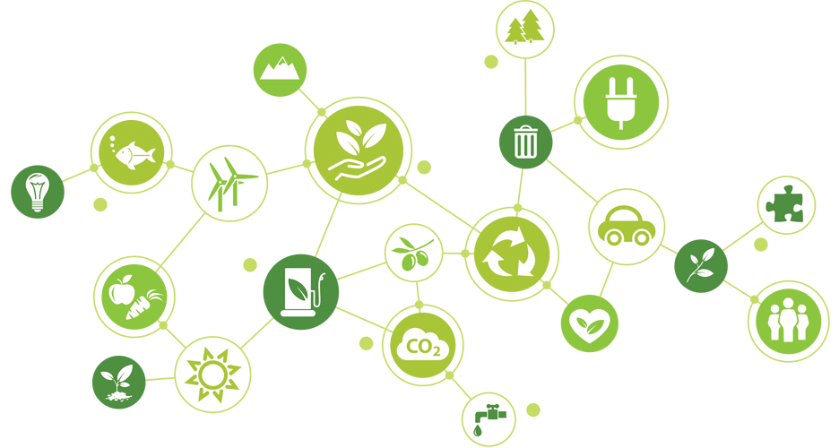

Understanding the Social and Political Dynamics of Sustainable Food Systems
aperture':'0','credit':'','camera':'','caption':'','created_timestamp':'0','copyright':'','focal_length':'0','iso':'0','shutter_speed':'0','title':'','orientation':'0'}' data-image-title='sfs-section' data-large-file='https://frontiersinblog.files.wordpress.com/2020/01/sfs-section.png?w=936' data-medium-file='https://frontiersinblog.files.wordpress.com/2020/01/sfs-section.png?w=300' data-orig-file='https://frontiersinblog.files.wordpress.com/2020/01/sfs-section.png' data-orig-size='936,500' data-permalink='https://blog.frontiersin.org/sfs-section/' sizes='(max-width: 936px) 100vw, 936px' src='https://frontiersinblog.files.wordpress.com/2020/01/sfs-section.png' srcset='https://frontiersinblog.files.wordpress.com/2020/01/sfs-section.png 936w, https://frontiersinblog.files.wordpress.com/2020/01/sfs-section.png?w=150 150w, https://frontiersinblog.files.wordpress.com/2020/01/sfs-section.png?w=300 300w, https://frontiersinblog.files.wordpress.com/2020/01/sfs-section.png?w=768 768w'>

Posted On: 2020-01-31T00:00:00
Content Date: 2020-01-31
Download Date: 2021-07-10
Document ID: L0C04F621